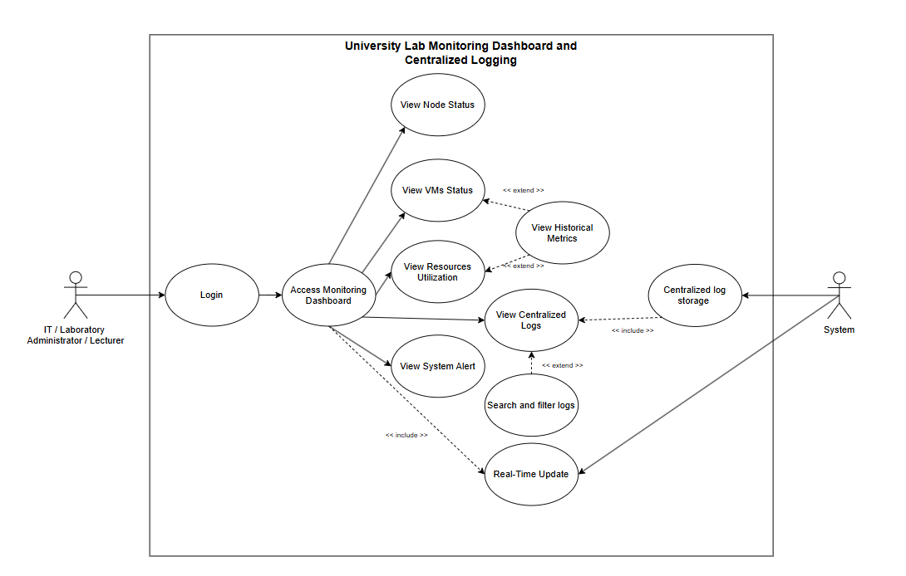

[ Loo Hong En ]
Supervisor: [ Ts. Dr Khoo Li Jing ]
From the LabEye / SDUL prefinal report (Ch. 1). Staff currently tab-hop between Proxmox VE, Wazuh Manager, and Wazuh Indexer — the same fabric that FYP-1B isolates and that FYP-1A virtualises.
Build LabEye (Security Dashboard for University Laboratory / SDUL): a lightweight web pane that unifies Proxmox VE APIs (node/VM status and utilisation), Wazuh Manager and Indexer APIs (alerts and searchable logs), and teaching deploy/Live controllers.
Frontend is a React + TypeScript + Vite + Tailwind SPA. Backend is Python Flask-SocketIO with JWT login, InfluxDB history, and Facade clients for Proxmox, Wazuh, Influx, and deploy hooks. Live UI uses a Strategy fallback (Socket.IO → REST → stale Influx) so the pane does not go blank when WebSocket fails.
Wazuh remains the log store (F011 is out of the LabEye feature set). LabEye displays and searches alerts. Deploy wizards call 1C / 2B APIs (catalog → deploy → status poll); Proxmox stays the hypervisor.
- What existing centralised logging dashboards, logging systems, security monitoring tools, and visualisation techniques can aggregate infrastructure and VM data for an educational laboratory?
- How can a Security Dashboard for University Laboratory be designed that integrates the centralised logging stack, Proxmox VE, and virtual-machine deploying systems to give real-time visibility of resources, VM status, security events, and teaching VM management?
- Can that dashboard address fragmented log management, infrastructure monitoring, and educational VM management efficiency in a university laboratory?
- Investigate existing centralised dashboard visualisation techniques that collect, process, and aggregate data from infrastructure and security services in educational labs.
- Design and develop LabEye so it unifies data from Wazuh and Proxmox VE, aggregating and visualising multiple sources with real-time laboratory visibility.
- Design and connect operational deployment backends with a simple guided flow so lecturers can manage and access academic VMs (1C normal labs, 2B provisioned / red-team labs).
- Validate effectiveness for infrastructure visibility, log access, and academic VM deployment through UAT with laboratory administrators.
| No. | Research question | Objective | Methods | Expected outcome |
|---|---|---|---|---|
| RQ1 | What dashboards, logging systems, and visualisation techniques fit an education lab? | RO1 — Investigate existing techniques | LiteratureTool compare | Wazuh selected for SIEM ingest; custom LabEye pane instead of Grafana/ELK as the classroom UI. |
| RQ2 | How to design LabEye with Wazuh, Proxmox VE, and VM deploying systems? | RO2 — Unified real-time dashboard RO3 — Connect 1C/2B deploy backends |
DesignAgile sprints | React SPA + Flask-SocketIO; Facade to Proxmox/Wazuh/Influx/deploy; F001–F010 and F012–F015. |
| RQ3 | Does LabEye improve fragmented monitoring, logs, and teaching VM management? | RO4 — UAT with lab administrators | UATTest cases | Runnable Dockerised system; UAT: clear for non-technical users; requests for hover help and seat↔node mapping. |
| Tool / System | Category | Key Features | Limitation for Lab Use | Selected? |
|---|---|---|---|---|
| Grafana | Monitoring | Customisable dashboards, supports Prometheus, InfluxDB, Elasticsearch data sources | No native SIEM or log management — requires separate tools for centralised logging | — |
| Zabbix | Monitoring | Enterprise-level, agent & agentless support, built-in alert thresholds | Limited log analysis; requires significant configuration expertise | — |
| ELK Stack | Log Mgmt | Scalable centralised log aggregation (Logstash), fast querying, Kibana visualisation | Complex initial deployment; high resource consumption — unsuitable for lightweight environments | — |
| Graylog Open | Log Mgmt | Real-time log centralisation, SIEM capability, scalable, filtering & operational intelligence | Advanced features restricted in free open-source version | — |
| Wazuh | SIEM / XDR | Unified open-source SIEM + XDR, agent-based threat detection, centralised alert management via Wazuh Indexer | Complex configuration; high resource requirements for larger environments | ✓ SELECTED |
Agentless + Active monitoring via Proxmox VE REST API. Easy deployment, no resource overhead on monitored nodes. Recommended for its low maintenance cost (Pandey & Mittal, 2020).
Centralised + Agent-based via Wazuh. Normalised log storage, audit-ready, search-ready. Real-time push to dashboard via WebSocket using Observer pattern.
Integrated monitoring: 63% MTTD improvement and 56% MTTR reduction. Centralised logging saves avg. 20 minutes per incident in error diagnosis (Jangam & Karri, 2023; Strilețchi et al., 2025).
LabEye is the custom classroom pane. Wazuh stays the SIEM (ingest, index, retain). Product feature F011 Centralized Log Storing is out of the LabEye feature set — it is owned by the Wazuh Indexer on the infrastructure plane (FYP-1B). LabEye reads Manager/Indexer APIs and displays alerts. History is an InfluxDB read path for metrics, not a second SIEM warehouse. Educational VM spawn stays with 1C / 2B; LabEye is the UX façade.
IDs follow the LabEye prefinal report (Ch. 4–6). Core monitoring is F001–F010. Product feature F011 (centralised log storing) is removed from LabEye — Wazuh Indexer / 1B keep the store. RQ_F005 / RQ_F006 describe that SIEM path, not a LabEye database. Added product features: F012–F015.
| Req. ID | Description | Feature | Priority |
|---|---|---|---|
| RQ_F001 | System shall authenticate administrators and lecturers via username and password before granting dashboard access | F001 Admin Login | CRITICAL |
| RQ_F002 | System shall retrieve node status information from the virtualised infrastructure through Proxmox VE API (1A) | F003 View Node Status | CRITICAL |
| RQ_F003 | System shall display the operational status (online / offline) of each Proxmox node using colour-coded status badges | F003 View Node Status | CRITICAL |
| RQ_F004 | System shall display the number of virtual machines and their status (running / stopped) on each node | F004 View VM Status | CRITICAL |
| RQ_F005 | Out of LabEye: collect and normalise sensor logs into the SIEM. Implemented by Wazuh agents + Manager on 1B. | F011 Log storing (removed) | N/A |
| RQ_F006 | Out of LabEye: persist logs in the Wazuh Indexer for monitoring and forensics. LabEye does not own a log warehouse. | F011 Log storing (removed) | N/A |
| RQ_F007 | System shall display centralised logs and allow search/filter by time, node, type, or keyword (Manager/Indexer APIs — display only) | F006 / F007 Logs + filter | HIGH |
| RQ_F008 | System shall update all monitoring data in real time via Socket.IO (REST fallback) without a full page refresh | F010 Real-Time Data Update | CRITICAL |
| RQ_F009 | System shall display resource utilisation metrics (CPU and memory usage) for each node within the laboratory network | F005 View Resource Utilisation | CRITICAL |
| RQ_F010 | System shall visualise infrastructure metrics using numbers, charts, and graphical indicators on the dashboard | F002 View Monitoring Dashboard | CRITICAL |
| F009 | System shall show historical resource and security-event trends over selected ranges via InfluxDB (not a LabEye-owned SIEM warehouse) | F009 View Historical Metrics | MEDIUM |
| RQ_F011 | System shall display alerts when nodes become unavailable or when monitoring data cannot be retrieved | F008 View System Alerts | HIGH |
| RQ_F012 | System shall issue a JWT to a successful login and refresh it while the session is valid | F012 JWT initializing | CRITICAL |
| RQ_F013 | System shall map the workstation (IP / seat policy) so students only manage VMs for their seat; staff may select multiple seats | F013 Seat locking | HIGH |
| RQ_F014 | System shall display connectivity of LabEye to upstream services (Proxmox, Wazuh, Influx, deploy APIs) | F014 System Status | HIGH |
| RQ_F015 | System shall guide template / vulnerability / service selection and deploy onto selected workstations via 1C / 2B APIs — not Terraform/Ansible inside LabEye | F015 Deploy + Live VMs | HIGH |


React + TS + Vite + Tailwind
RequireAuth · RequireRole
Socket.IO → REST → Influx
Dashboard · History · Logs
UX façade over 1C / 2B
Routes + Auth (JWT)
WebSocket Layer
Orchestration Layer
Periodic API Polling
JSON Payload Assembly
Hosts from 1A cluster
Manager + Indexer (1B)
Fault Tolerance
Strategy Pattern
Factory Method
Users / JWT revoke
Metric history (LabEye)
Log store — not LabEye (1B)
Server cluster
Student / lab VMs
Endpoint sensors
Firewall / switches
Reverse proxy / WSGI
Status from the LabEye report Ch. 6 feature coverage checklist. Click a badge to cycle locally; it is not saved.
LabEye is the class door onto the same fabric the other FYPs build. It does not virtualise hosts, isolate VLANs, or run IaC.
- 1AVirtualisation supplies the Proxmox cluster and images LabEye polls (nodes, qemu/lxc, utilisation).
- 1BInfrastructure holds Opnsense, VLANs, and Wazuh. LabEye reads Manager/Indexer APIs; Cluster Mesh / ntopng stay staff tools on that plane.
- 1CNormal deploy is the catalog → deploy → status API behind the Normal wizard (F015). LabEye does not embed Terraform/Ansible.
- 2BProvisioned / red-team deploy is the same façade for red / blue / network labs and Live VMs.
- 2C · 3A · 3BBlue, honeypot, and IDS/IPS generate traffic and alerts that staff can see in one pane instead of hopping Proxmox and Wazuh consoles.
UAT verdict (report Ch. 7): accepted with follow-ups. Core monitoring is usable for non-technical users.
- 01ACT-01 — Hover / tooltip plain-language help for Dashboard graph titles.
- 02ACT-02 — Show which workstation (WS) maps to which Proxmox node on Nodes (and detail).
- 03ACT-03 — Keep a flow-oriented user manual (login → monitor → status → deploy → live → logout).
- 04ACT-04 / ACT-05 — Plain UI copy; comments in source for teaching handoff.
- 05NFR light theme (not implemented). Optional later: extra alerting channels; more hypervisor types — still without making LabEye a SIEM.